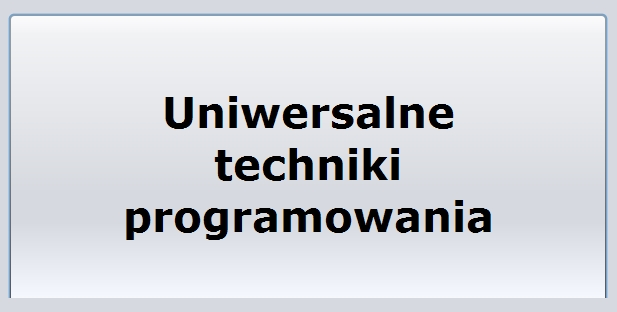

Autor:
Krzysztof Barteczko
© Krzysztof Barteczko 2010-2015
© Polsko - Japoñska Akademia Technik
Komputerowych 2010-2015
Wymagania wstêpne
- opanowanie
materia³u "Podstaw
programowania w jêzyku Java" i "Programowania obiektowego i GUI"
- zainteresowanie
programowaniem.
Licencje
Prezentacje
multimedialne
Niektóre prezentacje multuimedialne zosta³y
przygotowane za pomoc¹ programu Camtasia Studio, u¿ywanego w PJWSTK
przy okazji realizacji projektu "Nauczanie na odleg³oœc".
U¿yto
równie¿ programu Wink (freeware).
Ikony
Ikony wykorzystano na
zasadach Eclipse Public License Version 1.0.
http://www.eclipse.org/legal/epl-v10.html